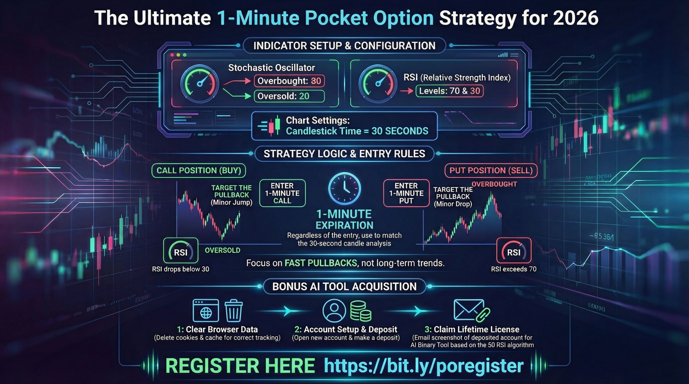
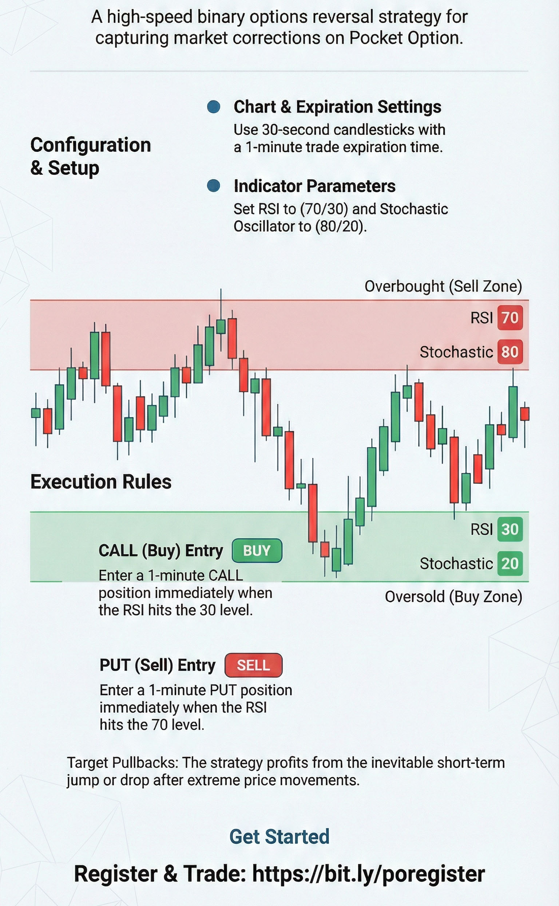
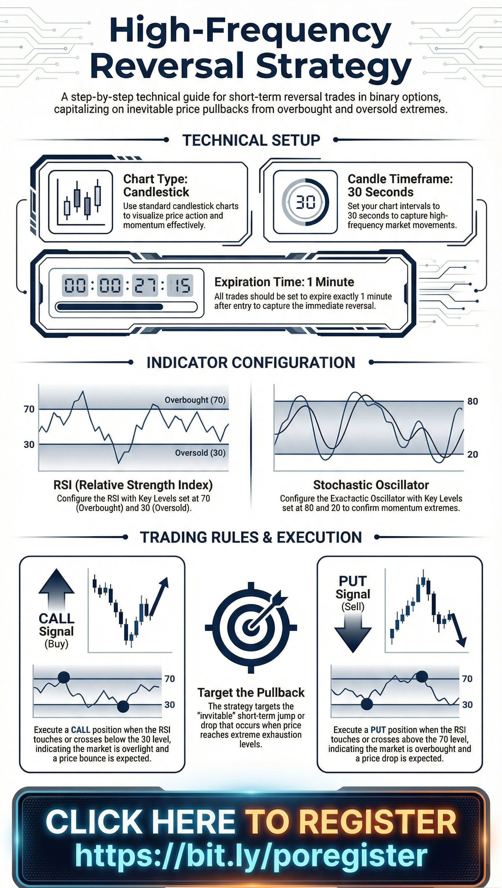

Pocket Option Strategy
🇺🇸 English
🇫🇷 Français (French)
🇷🇺 Русский (Russian)
🇩🇪 Deutsch (German)
🇹🇷 Türkçe (Turkish)
🇪🇸 Español (Spanish)
Turn your $10 into $500 in less than three hours with this strategy
Register Now: Start Trading Today

Apply this logic to your trading account instantly
Open Your Account


Strategy Tutorial Video
WATCH & REGISTER
Join the Elite 5%
Register & Trade Now